Data Preprocessing and Exploratory Data Analysis
Outline
I. Available Data
Our dataset includes information on every game contested by two FIFA members since 2006. However, since information on the FIFA Ranking and FIFA Points is only available starting in 2011, our final dataset is restricted to every game contested by two FIFA members since 2011.
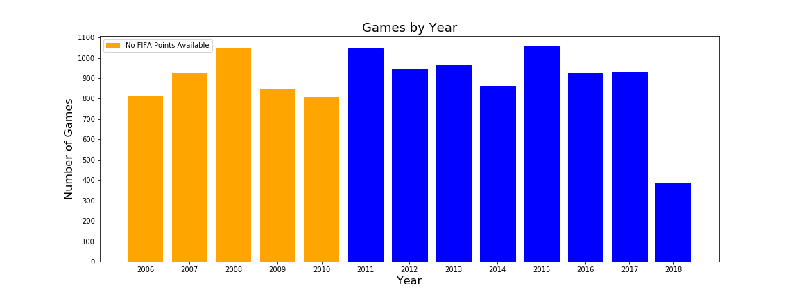We can see that, on average, the total number of games per year hovers around 900, with 2018 having had less games since there are still 5 months to go.
Below are the variables that were either available to us or we calculated ourselves.
i. Team Information
-
Teams: The two teams involved in a game, as well as their confederations (continent). The first team is coded as Team A, and the second team is coded as Team B.
-
FIFA Ranking: FIFA Ranking and FIFA Ranking Points for each team at the most recent FIFA Ranking release before the game. This is one way to measure team strength.
-
WIGGO Ranking: WIGGO Ranking and WIGGO Rating for each team for the month that the game was played in. This is another way to measure team strength that we explain in depth in the next tab.
Form: For each team, we computed the goal difference in each of their last 10 games as a way to measure their form. The rationale behind including this metric is that a historically strong team going through a bad run of form (like Germany prior to the 2018 World Cup) would not be picked up by metrics like FIFA or WIGGO.
ii. Game Information
-
Win (Response Variable): This is the result of the game, coded as 0 for a Team A loss, 1 for a draw, and 2 for a Team A win. We consider the result to be the final score after 120 minutes.
For example, when Croatia beat Russia on penalties to advance to the semifinal, that was logged as a draw, since the game was tied after 120 minutes. However, when Croatia beat England in extra time of the World Cup semifinal, that was logged as an outright win for Croatia, even though the game was tied at the end of 90 minutes.
The breakdown of results shows that draws are the least common result, with Team A wins (designated home team) significantly outnumbering Team B wins (designated away team).
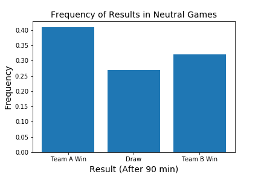 -
Date: The date of each game.
-
Game Type: Categorical variable. Options include Friendly, Continental Qualifier, World Cup Qualifier, Continental Tournament, Confederations Cup, and World Cup. Below is a breakdown of game types since 2006. We can see that official tournament games make up a small minority of all matches played, and World Cup games are even a smaller portion of those. Because our full data begins in 2011, we have 2 World Cups in the dataset (2014 and 2018) for a total of 128 World Cup games.
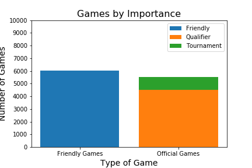
iii. Geographic Information
-
Home Advantage: Three-way variable for which team is at home. 1 for Team A, -1 for Team B, and 0 if neither.
-
Location: Country and city where each game is played. A bar plot of the most frequent cities show that Doha, the capital of Qatar, which is getting ready to host the 2022 World Cup, has been the busiest city in terms of hosting international matches.
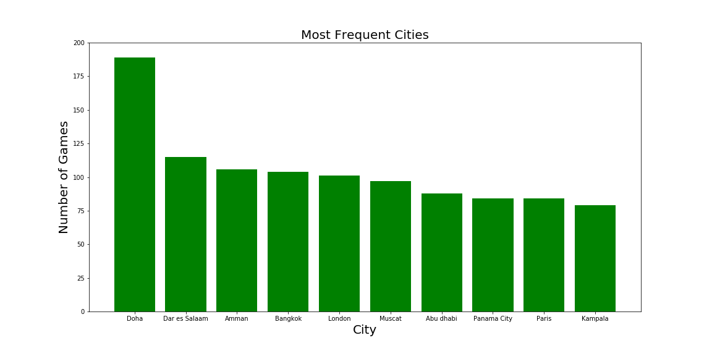Six of the eight countries with most games have either hosted or been selected to host a major tournament:
-
USA - Copa America 2016
-
South Africa - FIFA World Cup 2010
-
France - UEFA European Championship (Euros) 2016
-
Qatar - FIFA World Cup 2022
-
Germany - FIFA World Cup 2006
-
Russia - FIFA World Cup 2018
-
-
Coordinates: Latitude and Longitude of the city where each game was played. These were scraped with the Python library geopy. Below is a table that shows how this information is stored.
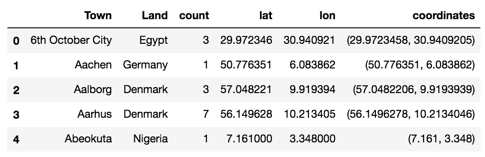 -
Time Zone: Time Zone (calculated as UTC Offset) of each city where the game was played. These were scraped with the Python libraries pytz, tzwhere, dateutil, and timezonefinder. We use this information to calculate fatigue metrics. We can see in the plot below that the majority of games are played in European time zones, with a good number of games in American time zones and Asian time zones too.
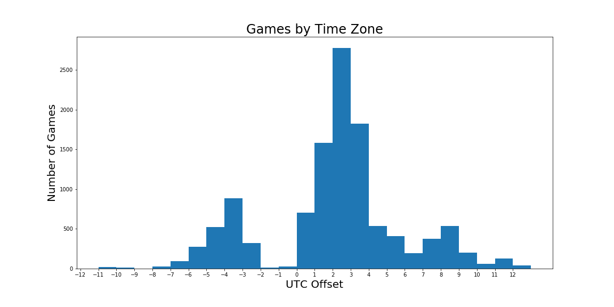 -
Distance from Home: The distance in kilometers between the game location and each team’s “home field.” This was meant as a more nuanced measure for Home Advantage, as research shows that teams get a small boost when they’re playing close to home as well. The way we determined each team’s home field was by identifying the city within their country where they had played the most games in the dataset. We felt this was a good proxy for where each federation felt that their home advantage would be strongest. Below is a table with the first five “home fields” in the sample.
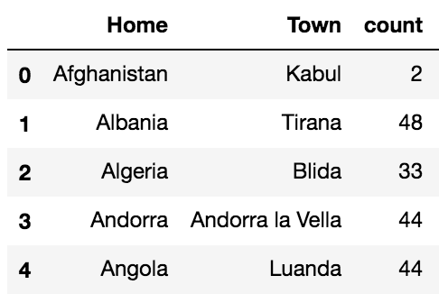The plot below shows how home teams on average are closer to their home field than away teams.
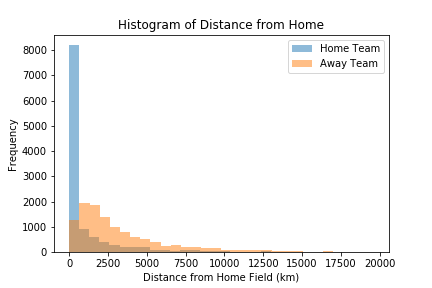The next plot shows the average distance from home for every FIFA member. The two teams on the far right, who have to travel more than 8,000km from home on average for their games, are Australia and New Zealand.
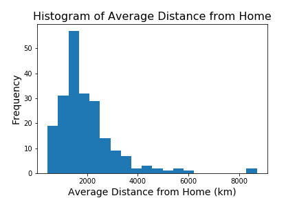The longest “distance from home” in our sample is Uruguay vs South Korea in Goyang, South Korea. Uruguay was 19,604 km from home.
iv. Fatigue Metrics
-
Time Delta: Days since each team’s last game. We use this information to calculate Fatigue metrics. We can see that most teams don’t go more than two months (60 days) without a game, but that there are a few teams that go for as long as six months without playing at times. Our fatigue metrics only kick in if a team has played a game in the last two weeks (14 days). Otherwise, all fatigue metrics are set to zero.
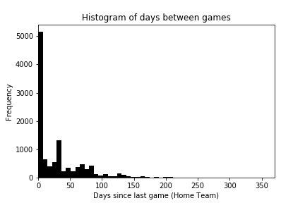 -
Travel Distance: The distance between the city of each team’s previous game and the city of their current game, divided by the days since their last game. This metric is in km/day. If a team’s last game occurred over two weeks before, travel distance is set to zero.
-
Time Zone Delta: The difference in time zone between the city of each team’s previous game and the city of their current game, divided by the days since their last game. This metric is in hours/day. If a team’s last game occurred over two weeks before, time zone delta is zero. The motivation for this metric is research that shows time zone changes and jetlag affect MLB teams’ performances.
II. Predictor Correlations
Not all the variables mentioned above were used as predictors (e.g. team’s confederations). The matrix below shows the correlation between all of our final predictor variables, with the response variable, Win, as the first row and column.
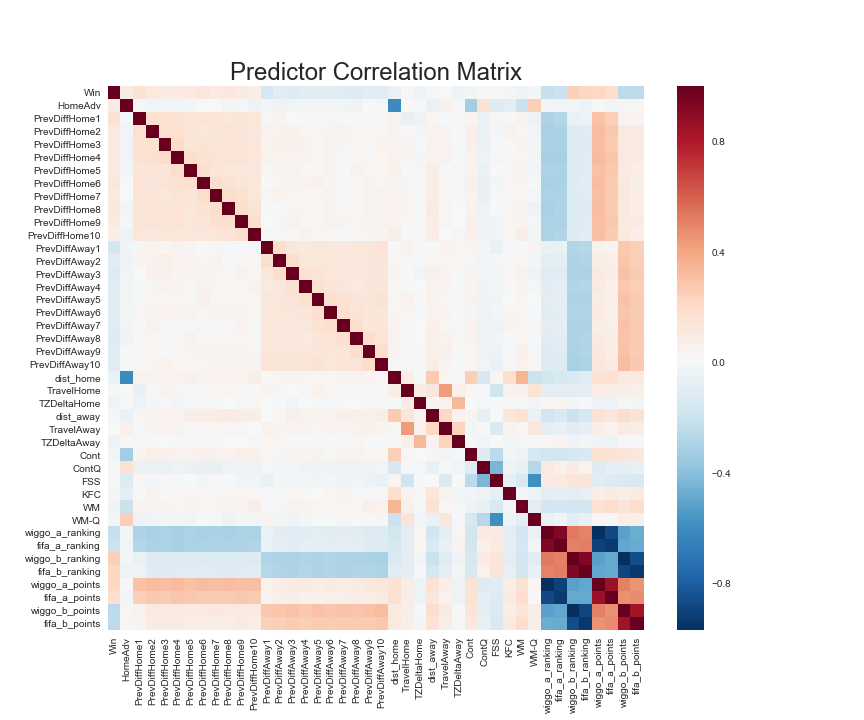Some things to note:
-
Sanity Check: Home Advantage is very negatively correlated to Distance from Home (less distance from home means a team is more likely to have home advantage).
-
Top Left Corner: Previous Results for Team A are positively correlated to Win and to each other, while Previous Results for Team B are negatively correlated to Win and positively correlated to each other. This makes perfect sense.
-
Bottom Left Corner: WIGGO and FIFA Rankings are negatively correlated to a team’s previous results, as a lower ranking (i.e. #1 Ranked team) tends to have a more positive goal difference. WIGGO Ratings and FIFA Points are positively correlated to a team’s previous results, as higher ratings tend to have a more positive goal difference. This is in line with what we expect.
-
Bottom Right Corner: WIGGO and FIFA Rankings are very highly correlated, as are WIGGO Ratings and FIFA Points. This makes sense, and it also motivates a large part of our analysis on the following tabs to see which metrics, WIGGO’s or FIFA, offer better information for our model.
III. Example Data
Here is the example row for the World Cup final with every variable available.
- date: 15.07.2018
- Home: France
- Home Confed: UEFA
- Away: Croatia
- Away Confed: UEFA
- FT H: 4
- FT G: 2
- AET H: nan
- AET G: nan
- AP H: nan
- AP G: nan
- ET: False
- PEN: False
- Type: WC
- Town: Moscow
- Land: Russia
- neutral venue: Yes
- HomeAdv: 0.0
- Win: 2.0
- day: 15
- month: 7
- year: 2018
- PrevDiffHome1: 1.0
- PrevDiffAway1: 0.0
- PrevDiffHome2: 2.0
- PrevDiffAway2: 0.0
- PrevDiffHome3: 1.0
- PrevDiffAway3: 0.0
- PrevDiffHome4: 0.0
- PrevDiffAway4: 1.0
- PrevDiffHome5: 1.0
- PrevDiffAway5: 3.0
- PrevDiffHome6: 1.0
- PrevDiffAway6: 2.0
- PrevDiffHome7: 0.0
- PrevDiffAway7: 1.0
- PrevDiffHome8: 2.0
- PrevDiffAway8: -2.0
- PrevDiffHome9: 2.0
- PrevDiffAway9: 1.0
- PrevDiffHome10: 2.0
- PrevDiffAway10: -2.0
- latitude: 55.7507178
- longitude: 37.6176606
- coordinates: (55.7507178, 37.6176606)
- dist_home: 2493.691069065942
- dist_away: 1871.536479172245
- UTC: 3.0
- datetime: 2018-07-15
- PrevCordHome: (59.938732, 30.316229)
- PrevCordAway: (55.7507178, 37.6176606)
- PrevDateHome: 2018-07-10 00:00:00
- PrevDateAway: 2018-07-11 00:00:00
- PrevTZHome: 3.0
- PrevTZAway: 3.0
- TimeDeltaHome: 5.0
- TimeDeltaAway: 4.0
- TravelHome: 127.23059732160955
- TravelAway: 0.0
- TZDeltaHome: 0.0
- TZDeltaAway: 0.0